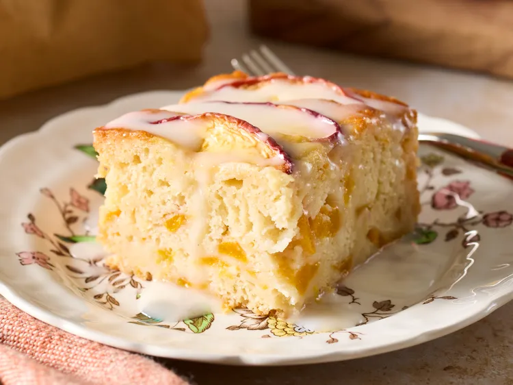

Peach Snack Cake

Description
This peach snack cake showcases sweet summer peaches in a tender, buttery cake. Finished with a simple glaze,
it's an easy dessert that feels special enough for any occasion. If you can't find fresh fruit in season,
this recipe also works with frozen or juice-packed canned peaches.
Ingredients
Cake:
- 1 1/2 cups all-purpose flour
- 1 teaspoon baking powder
- 1/4 teaspoon baking soda
- 1/4 teaspoon salt
- 1/2 cup butter, at room temperature
- 3/4 cup sugar
- 3/4 cup sugar
- 1/2 cup sour cream
- 1 tablespoon vanilla extract
- 2 cups diced peaches
- 1 cup thinly sliced peaches
Glaze:
- 1 cup powdered sugar
- 1/2 teaspoon almond extract or vanilla extract
- pinch of salt
- 1 to 2 tablepoons milk
Steps
- Preheat the oven to 350 degrees F (175 degrees C). Line an 8x8-inch square baking pan with parchment paper
and lightly coat with cooking spray.
- Whisk together flour, baking powder, baking soda, and salt in a bowl for the cake. Set aside.
- Beat butter in a large bowl with an electric mixer on medium speed for about 30 seconds. Add sugar and beat
until light and fluffy, about 3 minutes. Add eggs, one at a time, beating well after each addition.
- Add sour cream and vanilla; beat until combined. Add flour mixture to butter mixture and fold gently with a
rubber spatula until just combined. Fold in diced peaches, being careful not to overmix.
- Spread batter evenly into the prepared pan. Arrange sliced peaches over the top.
- Bake in the preheated oven until a toothpick inserted near the center comes out clean, 45 to 55 minutes.
Cool in the pan on a wire rack for 10 minutes. Remove cake from the pan using the parchment overhang and
cool completely on the wire rack, about 1 hour.
- For the glaze, whisk together powdered sugar, almond extract, and salt. Add milk, 1 tablespoon at a time,
until smooth and pourable. Drizzle over cooled cake before serving.
Home